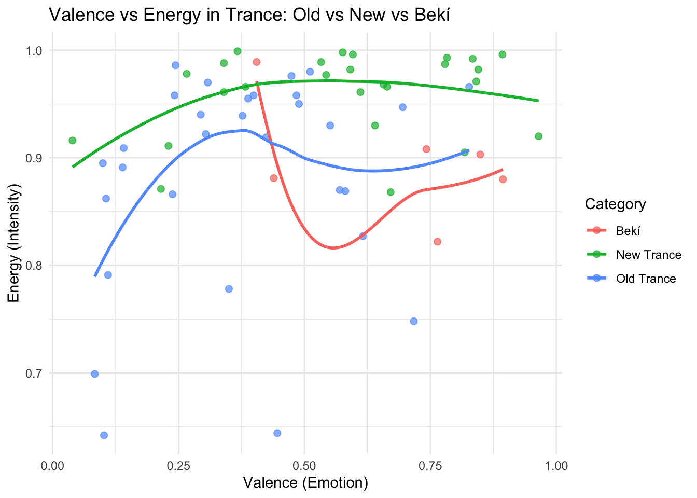
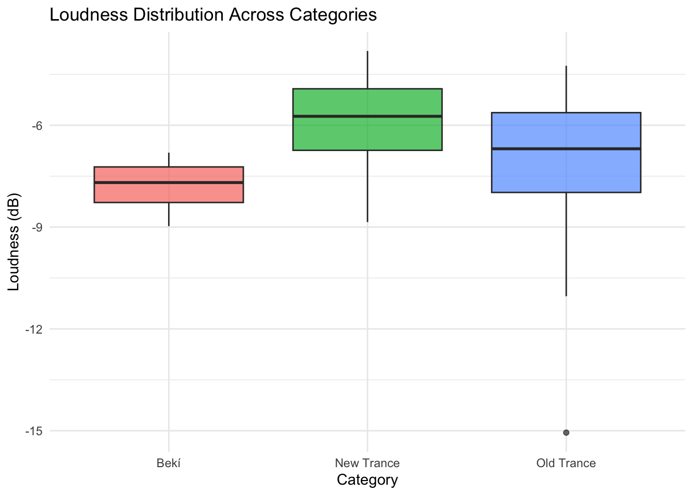
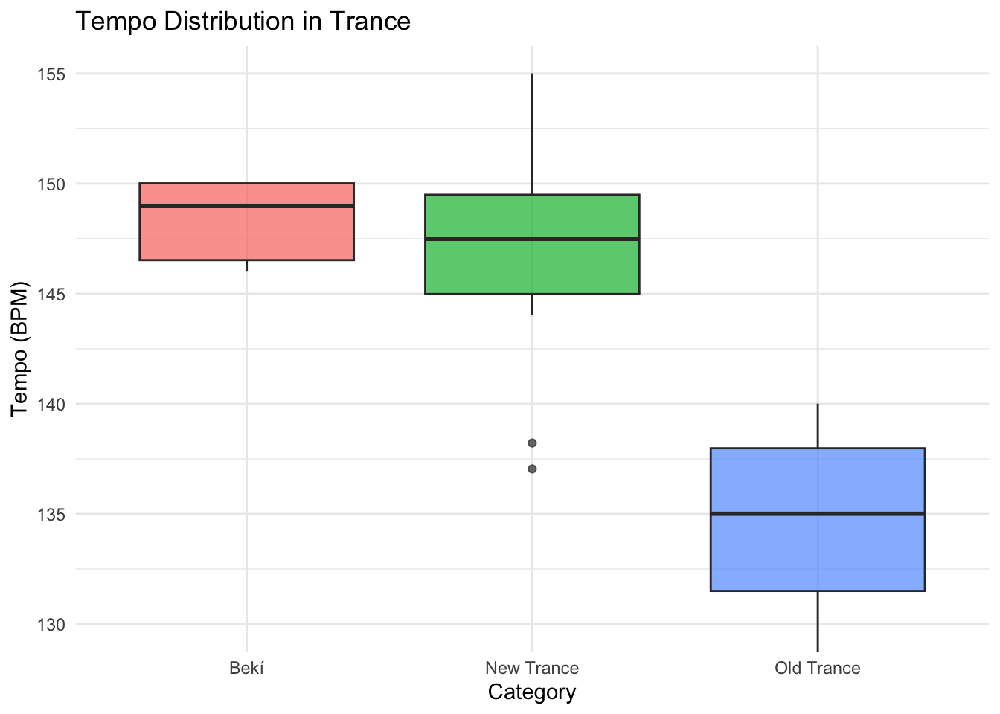
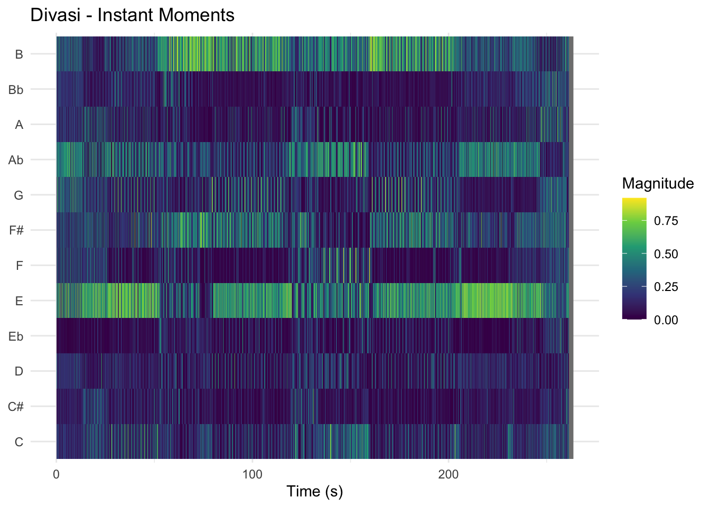
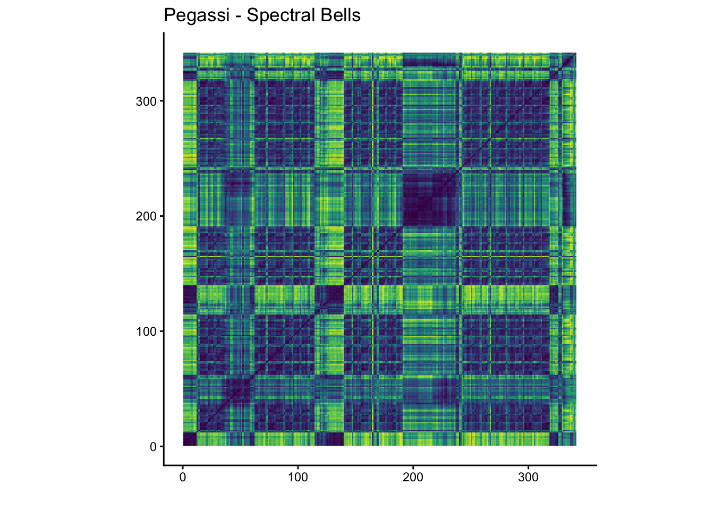

Loading required package: plotly
Attaching package: 'plotly'
The following object is masked from 'package:ggplot2':
last_plot
The following object is masked from 'package:stats':
filter
The following object is masked from 'package:graphics':
layout
Loading required package: viridis
Loading required package: viridisLite
Attaching package: 'viridis'
The following object is masked from 'package:scales':
viridis_pal
======================
Welcome to heatmaply version 1.6.0
Type citation('heatmaply') for how to cite the package.
Type ?heatmaply for the main documentation.
The github page is: https://github.com/talgalili/heatmaply/
Please submit your suggestions and bug-reports at: https://github.com/talgalili/heatmaply/issues
You may ask questions at stackoverflow, use the r and heatmaply tags:
https://stackoverflow.com/questions/tagged/heatmaply
======================
Rows: 62 Columns: 24
── Column specification ────────────────────────────────────────────────────────
Delimiter: ","
chr (7): Track URI, Track Name, Album Name, Artist Name(s), Added By, Genr...
dbl (14): Duration (ms), Popularity, Danceability, Energy, Key, Loudness, M...
lgl (1): Explicit
dttm (1): Added At
date (1): Release Date
ℹ Use `spec()` to retrieve the full column specification for this data.
ℹ Specify the column types or set `show_col_types = FALSE` to quiet this message.
#seperate old trance and new tranceTrance_Corpus <- Final_Corpus %>%mutate(`Release Date`=as.numeric(substr(`Release Date`, 1, 4))) %>%mutate(Category =ifelse(`Release Date`<2015, "Old Trance", "New Trance"))#seperate my own tracks from the old and new trance categoriesTrance_Corpus <- Trance_Corpus %>%mutate(Category =ifelse(`Artist Name(s)`=="Bekí", "Bekí", Category))
For this project, I created a dataset of 62 trance tracks divided into two equal groups: classic trance and modern trance. The classic tracks mainly come from the late 1990s and early 2000s, while the modern tracks represent more recent releases. My track selection of the classic trance was based on spotify playlists with names like “trance hits” or “top 100 trance” which were made before 2013. My track selection of the modern trance was based on my own knowledge of songs, because I am really invested in this part of the genre. I chose these two categories to explore how the trance genre has changed over time, especially in terms of sound, structure, and production style. The classic trance tracks were selected because they are known for their melodic focus, longer breakdowns, and more gradual build-ups. On the other hand, modern trance tracks tend to be faster, louder, and more focused on maintaining a high level of energy throughout the track. By comparing these two groups, I aimed to identify clear differences between older and newer production approaches. In addition to these tracks, I also included a small number of my own productions (Bekí). These tracks were produced using a digital audio workstation, where I created the sounds using synthesizers and arranged them into full tracks. They are mainly influenced by modern trance, but also include some elements of classic trance, such as melodic progression. The purpose of including my own tracks is not to analyse them separately, but to see where they fit within the broader trance genre. This helps to connect the analytical part of the project to my own production practice.
Track-Level Features
ggplot(Trance_Corpus, aes(x = Valence, y = Energy, colour = Category)) +geom_point(alpha =0.7, size =2) +geom_smooth(se =FALSE, span =1) +labs(title ="Valence vs Energy in Trance: Old vs New vs Bekí",x ="Valence (Emotion)",y ="Energy (Intensity)",colour ="Category" ) +theme_minimal()
`geom_smooth()` using method = 'loess' and formula = 'y ~ x'

The relationship between valence (emotion) and energy shows clear differences between lassic and modern trance. Modern trance tracks are all grouped at very high energy levels, often close to the maximum, while also keeping relatively high valence. This suggests that modern trance focuses on a consistent, high-impact and euphoric sound, with not much variation in intensity throughout the track.
Classic trance shows a much wider spread in both energy and valence. Even though many tracks are still energetic, there is more variation, including moments with lower energy and lower emotional intensity. This reflects how classic trance is built around progression and contrast, where tracks move between calm breakdowns and more energetic peaks.
My own tracks are also high in energy, similar to modern trance, but they show slightly more variation in valence. This suggests that while they follow modern production styles in terms of intensity, they might still include some of the emotional variation that is more typical of classic trance.
Overall, this visualization supports the idea that trance has changed over time, from a genre focused on emotional development and contrast to one that prioritizes constant energy and immediate impact.
ggplot(Trance_Corpus, aes(x = Category, y = Loudness, fill = Category)) +geom_boxplot(alpha =0.7) +labs(title ="Loudness Distribution Across Categories",x ="Category",y ="Loudness (dB)" ) +theme_minimal() +theme(legend.position ="none")

ggplot(Trance_Corpus, aes(x = Category, y = Tempo, fill = Category)) +geom_boxplot(alpha =0.7) +coord_cartesian(ylim =c(130, 155)) +labs(title ="Tempo Distribution in Trance",x ="Category",y ="Tempo (BPM)" ) +theme_minimal() +theme(legend.position ="none")

The loudness distribution in figure 2 shows a clear difference between classic trance, modern trance, and my own productions (Bekí). Modern trance tracks are generally the loudest, with values around -6 dB. This means that the sound is very intense and consistent throughout the track. This fits with current production styles, where tracks are heavily compressed to sound as powerful as possible, especially in club settings where loudness and impact are important.
Classic trance, on the other hand, shows a wider spread in loudness and is overall a bit quieter. There are also some lower outliers, which suggests that these tracks have more variation in volume. This makes sense musically, because older trance often builds up from quieter breakdowns to louder drops, creating a stronger sense of contrast which results in a more emotional feeling.
My own tracks fall somewhere in between, but they are closer to modern trance. The loudness is quite consistent, which shows that I focus on keeping the energy level high throughout the track. However, they are slightly less extreme than modern trance tracks, which suggests that I still leave some room for variation in dynamics.
The tempo distribution in figure 3 shows another clear difference between the two styles. Classic trance tracks are mostly between 130 and 140 BPM, which gives them a more steady and flowing feel. This slower tempo works well with the longer melodies and gradual build-ups that are typical for older trance.
Modern trance, in contrast, is much faster, usually between 145 and 155 BPM. This higher tempo creates a more driving and energetic feeling, which fits with the more intense and club-focused style of the genre today.
My own productions are also on the higher end of the tempo range, which places them close to modern trance. This shows that my tracks follow current trends, especially in terms of energy and how they are designed for the dancefloor.
Chroma Features
remotes::install_github('jaburgoyne/compmus')
Skipping install of 'compmus' from a github remote, the SHA1 (11f4fe28) has not changed since last install.
Use `force = TRUE` to force installation
── Column specification ────────────────────────────────────────────────────────
Delimiter: ","
dbl (13): TIME, A, Bb, B, C, C#, D, Eb, E, F, F#, G, Ab
ℹ Use `spec()` to retrieve the full column specification for this data.
ℹ Specify the column types or set `show_col_types = FALSE` to quiet this message.
IMROOS |>compmus_wrangle_chroma() |>mutate(pitches =map(pitches, compmus_normalise, "euclidean")) |>compmus_gather_chroma() |>ggplot(aes(x = start + duration /2,width = duration,y = pitch_class,fill = value ) ) +geom_tile() +labs(x ="Time (s)", y =NULL, title ="r.o.o.s - Instant Moments", fill ="Magnitude") +theme_minimal() +scale_fill_viridis_c()
IMDIVASI <-read_csv("Divasi annotation.csv")
Rows: 5675 Columns: 13
── Column specification ────────────────────────────────────────────────────────
Delimiter: ","
dbl (13): TIME, A, Bb, B, C, C#, D, Eb, E, F, F#, G, Ab
ℹ Use `spec()` to retrieve the full column specification for this data.
ℹ Specify the column types or set `show_col_types = FALSE` to quiet this message.
IMDIVASI |>compmus_wrangle_chroma() |>mutate(pitches =map(pitches, compmus_normalise, "euclidean")) |>compmus_gather_chroma() |>ggplot(aes(x = start + duration /2,width = duration,y = pitch_class,fill = value ) ) +geom_tile() +labs(x ="Time (s)", y =NULL, title ="Divasi - Instant Moments", fill ="Magnitude") +theme_minimal() +scale_fill_viridis_c()

To analyse the differences between classic and modern trance, I created chromagrams for two versions of the same track: “Instant Moments”. The original version by R.O.O.S and a modern remake by Divasi. Because both tracks are based on the same musical idea, this makes it easier to clearly see how the genre has changed over time.
In the chromagram of the original R.O.O.S track, there are clear horizontal bands across several pitch classes. This means that certain notes stay active for longer periods of time. These sustained patterns are typical for chords, pads, and arpeggios, which are key elements in classic trance. The result is a smooth and continuous harmonic structure, where the music gradually evolves and creates an emotional progression, especially in breakdown sections.
In contrast, the chromagram of the Divasi remake looks much more fragmented. Instead of long horizontal lines, there are many short vertical patterns, which show that the pitch content is changing more quickly. This suggests that the sounds are shorter and more rhythmically driven, like stabs or repeating synth patterns. Rather than focusing on long chord progressions, the modern version uses pitch more as a rhythmic tool that supports the energy of the track.
Another noticeable difference is that the modern chromagram looks more “busy” and less smooth overall. This reflects how modern trance often focuses on maintaining high energy and drive throughout the track, instead of building long emotional transitions like older trance does.
Overall, the comparison shows a clear shift in how pitch is used in trance music. Classic trance focuses more on harmony and melodic development, while modern trance puts more emphasis on rhythm, repetition, and intensity. Even though both tracks share the same core idea, the chromagrams show how differently that idea is expressed depending on the style and era.
SP <-read_csv("Spectral Bells annotation.csv")
Rows: 14718 Columns: 22
── Column specification ────────────────────────────────────────────────────────
Delimiter: ","
dbl (22): TIME, BIN 1, BIN 2, BIN 3, BIN 4, BIN 5, BIN 6, BIN 7, BIN 8, BIN ...
ℹ Use `spec()` to retrieve the full column specification for this data.
ℹ Specify the column types or set `show_col_types = FALSE` to quiet this message.
SP |>compmus_wrangle_timbre() |>mutate(timbre =map(timbre, compmus_normalise, "manhattan")) |>compmus_gather_timbre() |>ggplot(aes(x = start + duration /2,width = duration,y = mfcc, , fill = value ) ) +geom_tile() +labs(x ="Time (s)", y =NULL, title ="Pegassi - Spectral Bells", fill ="Magnitude") +scale_fill_viridis_c() +theme_classic()
Warning: Using `by = character()` to perform a cross join was deprecated in dplyr 1.1.0.
ℹ Please use `cross_join()` instead.
ℹ The deprecated feature was likely used in the compmus package.
Please report the issue to the authors.

To analyse timbre and structure, I created cepstrograms and self-similarity matrices (SSM) for both a modern trance track and a classic trance track. These visualisations show how the sound of a track develops over time and how different sections are related.
Starting with the modern trance track, the cepstrogram (Pegassi – Spectral Bells) shows a fairly consistent pattern, with most of the activity concentrated in the lower MFCC components. These lower components represent the main characteristics of the sound, such as brightness and bass content. The horizontal bands indicate that the overall timbre remains relatively stable throughout the track, meaning that the same types of sounds and synths are used consistently. However, there are also noticeable changes at specific moments in time, which likely correspond to drops, build-ups, and breakdowns. This suggests that changes in timbre happen in clearly defined sections rather than gradually over time.
The self-similarity matrix of the modern trance track (Pegassi – Spectral Bells) supports this. It shows a clear grid-like structure with repeating blocks. These blocks indicate that certain sections of the track are very similar to each other, meaning that musical elements such as rhythms, sounds, or patterns are reused. The strong vertical and horizontal lines suggest a structured arrangement with clearly separated sections, which is typical for modern trance where repetition and energy are important.
ALTF4 <-read_csv("Alt+f4.csv")
Rows: 21805 Columns: 22
── Column specification ────────────────────────────────────────────────────────
Delimiter: ","
dbl (22): TIME, BIN 1, BIN 2, BIN 3, BIN 4, BIN 5, BIN 6, BIN 7, BIN 8, BIN ...
ℹ Use `spec()` to retrieve the full column specification for this data.
ℹ Specify the column types or set `show_col_types = FALSE` to quiet this message.
ALTF4 |>compmus_wrangle_timbre() |>mutate(timbre =map(timbre, compmus_normalise, "manhattan")) |>compmus_gather_timbre() |>ggplot(aes(x = start + duration /2,width = duration,y = mfcc, , fill = value ) ) +geom_tile() +labs(x ="Time (s)", y =NULL, title ="Anjunabeats - Alt+F4", fill ="Magnitude") +scale_fill_viridis_c() +theme_classic()
Looking at the classic trance track (Anjunabeats – Alt+F4), the cepstrogram shows a smoother and more gradual pattern over time. The horizontal bands are still present, but they appear more continuous, with fewer abrupt changes. This indicates that the timbre develops more slowly, with sounds evolving over longer periods instead of switching quickly between different sections. This reflects the use of sustained pads and layered synths, which are common in classic trance and contribute to a more flowing sound.
The self-similarity matrix of the classic trance track (Anjunabeats - Alt+F4) also shows repeating sections, but the structure appears more continuous. Instead of very clear and separate blocks, the patterns seem to blend more into each other, suggesting smoother transitions between different parts of the track. This indicates that the track is built more around gradual development rather than clearly separated sections.
Comparing the two, a clear difference can be seen in both timbre and structure. The modern trance track is more structured and repetitive, with clearly defined sections and consistent sound design. In contrast, the classic trance track develops more gradually, both in terms of timbre and structure, creating a more continuous and evolving listening experience. This shows that modern trance focuses more on maintaining energy through repetition and structure, while classic trance places more emphasis on progression and gradual change.
heatmaply( Trance_juice,hclustfun = hclust,hclust_method ="average", # Change for single, average, or complete linkage.dist_method ="euclidean")
Warning in doTryCatch(return(expr), name, parentenv, handler): unable to load shared object '/Library/Frameworks/R.framework/Resources/modules//R_X11.so':
dlopen(/Library/Frameworks/R.framework/Resources/modules//R_X11.so, 0x0006): Library not loaded: /opt/X11/lib/libSM.6.dylib
Referenced from: <5FD378C2-DF88-3BAC-B48D-DF631DE22C72> /Library/Frameworks/R.framework/Versions/4.6/Resources/modules/R_X11.so
Reason: tried: '/opt/X11/lib/libSM.6.dylib' (no such file), '/System/Volumes/Preboot/Cryptexes/OS/opt/X11/lib/libSM.6.dylib' (no such file), '/opt/X11/lib/libSM.6.dylib' (no such file), '/Library/Frameworks/R.framework/Resources/lib/libSM.6.dylib' (no such file), '/Library/Java/JavaVirtualMachines/jdk-21.0.8+9/Contents/Home/lib/server/libSM.6.dylib' (no such file)
Warning: Using `size` aesthetic for lines was deprecated in ggplot2 3.4.0.
ℹ Please use `linewidth` instead.
ℹ The deprecated feature was likely used in the dendextend package.
Please report the issue at <https://github.com/talgalili/dendextend/issues>.
To further analyse the differences between tracks, I created a hierarchical clustering and a heatmap based on audio features that are relevant to dance music like danceability, energy, valence, tempo and loudness. These visualisations help to group tracks together based on similarity and show how these features contribute to those groupings.
Starting with the heatmap, each row represents a track and each column represents one of the selected audio features (such as energy, loudness, tempo, etc.). The colours indicate the magnitude of each feature, where brighter colours represent higher values and darker colours represent lower values. One clear observation is that tracks with similar colour patterns tend to appear next to each other. This means that these tracks share similar audio characteristics. For example, some tracks show consistently high energy and loudness values, which likely places them in the modern trance category, while others have more variation or lower values, which may correspond to classic trance tracks.
The clustering applied to the heatmap further reinforces this. You can see that the tracks are not randomly ordered but grouped into clusters, where each cluster represents tracks that are more similar to each other than to the rest of the dataset. This suggests that the selected features are effective in capturing meaningful differences between tracks.
Looking at the hierarchical clustering (dendrogram), the structure shows how tracks are grouped step by step based on their similarity. Tracks that are connected at lower distances (lower on the tree) are more similar, while tracks that only connect higher up are more different. There are a few clear clusters visible, where groups of tracks branch off together. These clusters likely represent different styles or production approaches within the dataset, but unfortunately this dendogram is not very helpful for my research. There are no clear visible clusters between the old trance and the modern trance.
Overall, the clustering results support the earlier findings from loudness, tempo, chroma, and timbre analysis. Tracks that follow modern trance conventions (higher loudness, higher tempo, more consistent energy) tend to group together, while classic trance tracks also form separate clusters due to their lower tempo and more dynamic structure. This shows that the chosen features successfully capture stylistic differences in the dataset and can be used to distinguish between different types of trance music.
Contribution
Through this set of analyses, I have gained a much clearer understanding of how different musical features define and separate styles within trance music. By looking at loudness, tempo, chroma, timbre, and clustering, it became clear that the differences between classic and modern trance are not just subjective, but can actually be measured and visualised.
One of the main things I learned is how strongly modern trance is characterised by consistency and intensity. Features such as loudness and tempo showed that modern tracks are generally louder and faster, which creates a more energetic and club-focused sound. This was also visible in the timbre analysis, where the cepstrograms showed more stable and consistent sound characteristics over time, and in the self-similarity matrices, where clear and repetitive structures appeared. In contrast, classic trance showed more variation, both in loudness and timbre, with smoother transitions and more gradual development. This reflects a more melodic and evolving approach to production.
Another important insight is how these different features work together. For example, higher tempo, higher loudness, and consistent timbre all contribute to the overall intensity of modern trance. Meanwhile, variation in these features contributes to the more emotional and progressive feel of classic trance. The clustering analysis confirmed this by grouping tracks with similar characteristics together, showing that these features are effective in distinguishing between different styles.
In relation to my own productions, I learned that my tracks align closely with modern trance in terms of tempo, loudness, and overall structure. However, they still retain some level of variation, which suggests that I am combining elements of both modern and classic styles. This is useful for understanding my own artistic direction and where my music sits within the broader genre.
These conclusions could be useful for several groups. For music producers, this kind of analysis can help guide production decisions by showing how specific features contribute to a certain style or sound. For example, if a producer wants to create a modern trance track, they can focus on higher tempo, higher loudness, and more consistent timbre. For music analysts or researchers, these methods provide a way to objectively compare genres and track how they evolve over time. Finally, for platforms like Spotify or other recommendation systems, these kinds of features can improve how music is categorised and suggested to listeners, leading to more accurate and personalised recommendations.
Overall, this project shows that audio features are a powerful way to understand music on a deeper level, and that data analysis can reveal patterns that might not be immediately obvious just by listening.